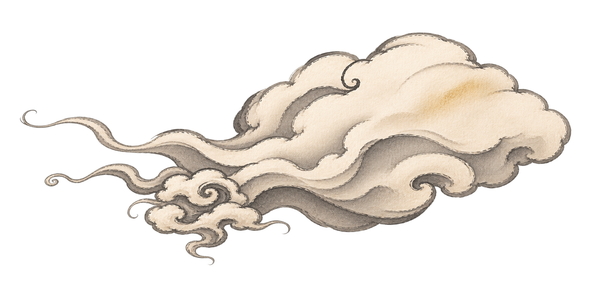
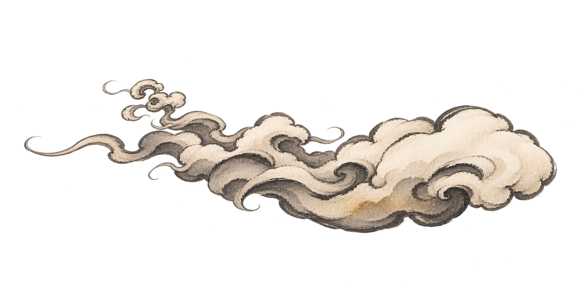
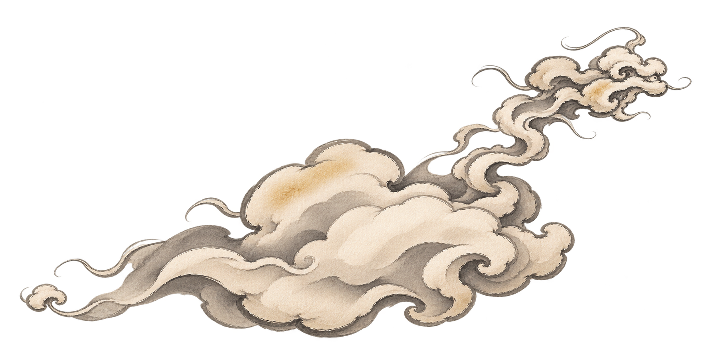
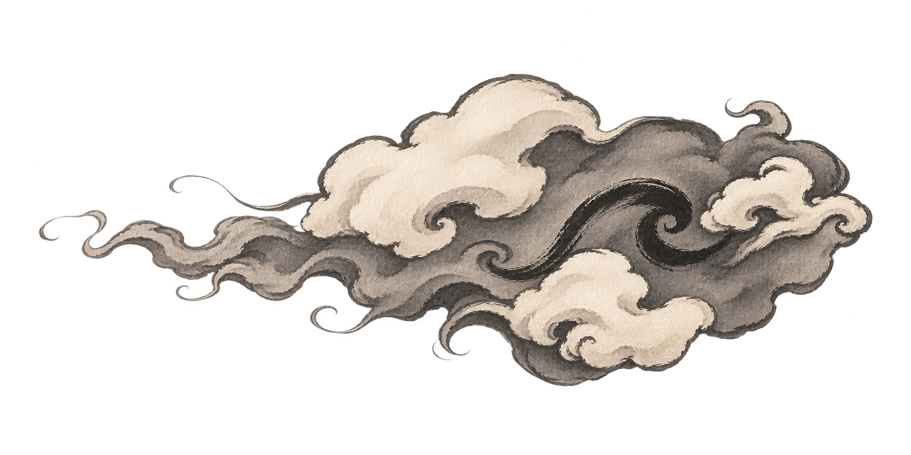
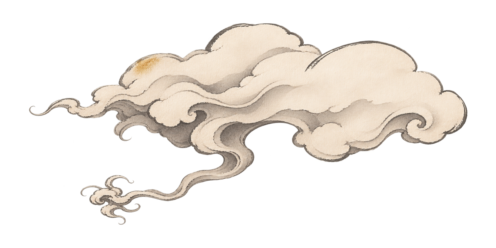

U — Crown front
A broad, quiet leading head with two delicate trailing tails and a small low tangle.

V — Low tumbling bank
A squat, heavy cloud with darker lower folds and an uneven rear knot.

W — Rising tangle
A tiny intricate leading cloud rises above a much larger low cloud mass.

X — Charcoal front
A dense gray cloud with strong black ink folds and scattered ivory forms.

Y — Floating canopy
A broad pale canopy with a deep lower notch and a long pendant of fine curls.